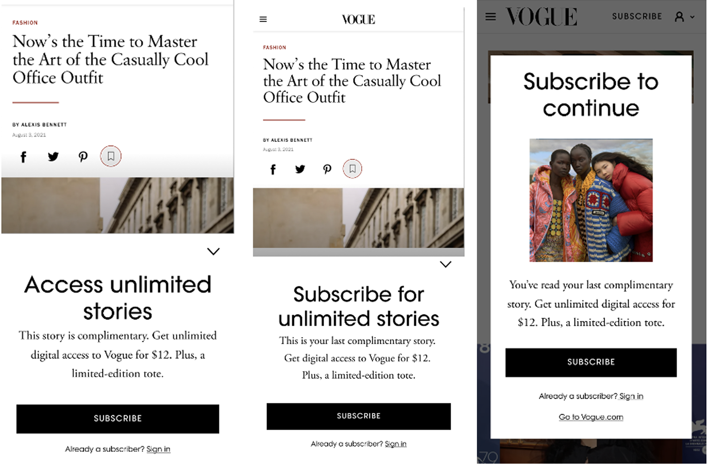
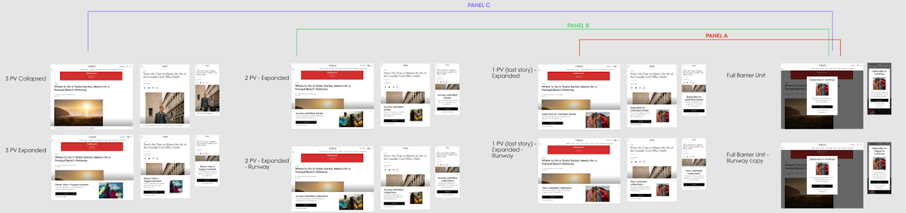

Case Study — Vogue / Condé Nast
Implementing a Digital Paywall on Vogue.com
The Vogue design team was tasked with crafting the first-ever Vogue digital paywall, after a strategic business decision to shift to a subscription model for digital content. Design had the specific responsibility of balancing this business need with a user-centric approach — because implementing a paywall means automatically frustrating the user.

Challenge
We were given a short turnaround to work across cross-functional partners — Editorial, Legal, Marketing, Consumer Revenue, and Creative — to adapt Condé Nast's current subscription model and payment flows to Vogue.
Implementing a paywall means automatically frustrating the user, so Design had the specific responsibility of balancing this business need with taking a user-centric approach as much as possible.
Approach
For such a strategic business proposition, we looked to the numbers. By analysing data on which audience segments (e.g. coming in from search vs. social) registered for a free account on which types of content (e.g. Culture vs. Runway site sections), we built a data-informed strategy.
Because this was such a drastic change for readers, we implemented a phased approach: warning gates on 1–3 articles before landing on a fully gated article. We crafted straightforward, clear messaging — in lieu of marketing language — to delicately balance a moment when consistent readers would be faced with paying to continue their readership.
We crafted a handful of panel tests and accompanying flows to help us better understand and optimise conversion.

Outcome